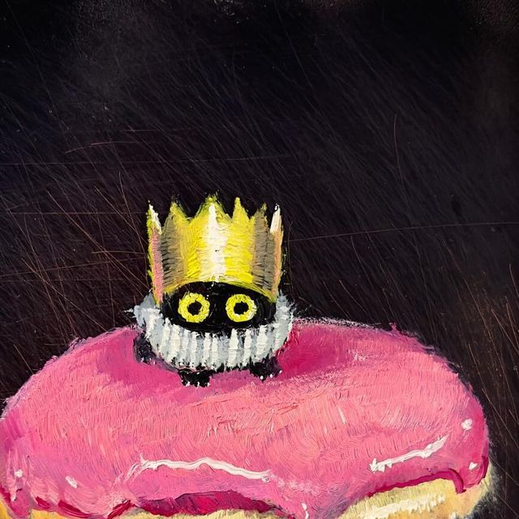

Welcome to
My Compilation
for the subject
Web Design
This is a project was made by
Pia Jacel P. Sang-an
from
Class 3-B
In requirement to the subject
Web Design
for the degree of
Bachelor of Science in Graphics and Design

Go Back
I
II
III
IV
Next Page